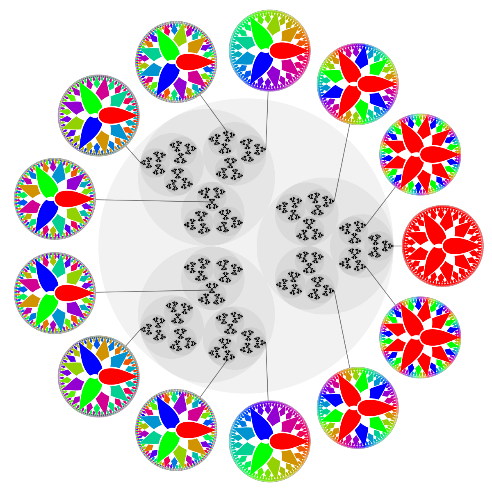

Reuben Omolu
This is the website for Reuben Omolu. I am currently a 4th Year Student studying mathematics at University College London. My MSci project focuses on p-adic field extensions and the inverse Galois problem over p-adic fields. My research interests are in Number Theory, with applications in Topological Data Analysis. I am looking to continue my research next year through a PhD.
The following is a list of courses that I have completed:
Algebraic Modules
- Algebra I (Linear Algebra)
- Algebra II (Abstract Algebra)
- Algebra III (Further Linear Algebra)
- Algebra IV (Groups and Rings)
- Number Thoery
- Commutative Algebra
- Algebraic Geometry
- Algebraic Number Theory
- Lie Algebras and Lie Groups
- Representation Theory
- Galois Theory (University of Toronto)
- Groups, Rings and Fields (University of Toronto)
Analysis Modules
- Analysis I (Series and Sequences)
- Analysis II (Riemannian Integration)
- Analysis III (Complex Analysis)
- Analysis IV (Real Analysis)
- Applied Mathematics
- Prime Numbers and their Distribution
- Linear Partial Differential Equations (University of Toronto)
- Topology (University of Toronto)
Applied Mathematics Modules
- Applied Mathematics
- Newtonian Mechanics
- Fluid Mechanics
- Mathematics Methods I (Pre-Calculus)
- Mathematics Methods II (Fourier Theory and Calculus of Variations)
- Mathematics Methods III (Multivariable Calculus
- Mathematics Methods IV (Ordinary Differential Equations)
Other Modules
- Combinatorics (University of Toronto)
- Probability and Statistics 1 (University of Toronto)
- Probability and Statistics 2 (University of Toronto)
Here is my
CV
and here is my academic CV.